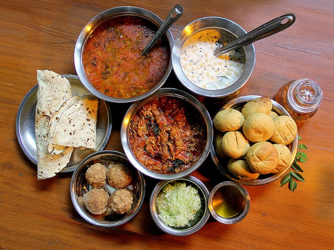

Reiligious-Places
Hill-Stations Beaches
Historical-Places Adventure
Night-Life Photography
Shopping
Reiligious-Places
Hill-Stations Beaches
Historical-Places Adventure
Night-Life Photography
Shopping
Reiligious-Places
Hill-Stations Beaches
Historical-Places Adventure
Night-Life Photography
Shopping
Reiligious-Places
Hill-Stations Beaches
Historical-Places Adventure
Night-Life Photography
Shopping
Indian food is generally known for its spiciness and every single spice used in Indian dishes carries some or other nutritional as well as medical properties which not only makes it unique in taste but also a very healthy. So if you are a food lover but still haven’t tasted these delicious dishes then it’s time to pack your bags and go on a food journey.
Go high with special goan beer – feni (made from cashew) & finger licking tasty seafood (prawns, fishes, crab etc) & non-veg (chiken, pork, beef, mutton) like
Sorpotel, Ambotik, Vindaloo, Fried Fsih (Pomfret Fish), Xacuti, Bebinca, Cafrial and Goan Curry. Local spices and coconut milk are some ingredients of Goan
food.
Best time to visit Goa :- Between Mid November to Mid February (Christmas and New Year are celebrated in a big way)
Rasgullas, Sondesh and Mishti Doi is the first thing that strikes our mind and filled our mouth with water in the name of Kolkata. Though famous for its sweets
but you cannot forget about the special Hilsa (fresh water fish) Fish cooked in mustard gravy and those super spicy Phuchkas and Jhalmuri which have ability
to set your tongue on fire.
Best time to visit Kolkata:- Between October to March (Durga Puja is celebrated in a very religious way and thus gives you more option to explore some great
food)
Popularly known as “Nawabo Ka Seher”. So if you wish to eat like king with the royal recipes covering your platter then it’s a must visit place and get your
taste buds a Nawabi impact with different types of Kebabs, Mutton Rogan Josh, Lucknowi Biryani, Rabri, Lassi, Nihari Kulche, Khasta Kachori, Sheermal,
Lucknowi Paan.
Best time to visit Lucknow:- March and April

Daal Bati Churma is the famous dish of Rajasthan; super rich in Ghee content and no Rajasthani Thali is complete without it. Apart this; Gatte ki Sabzi, Pyazz
Kachori, Papad ki Sabzi, Ghevar, Gond ke Laddu, Kesar Murg and Laapsi are quiet popular and mouth watering dishes of Rajasthan.
Best time to visit Rajasthan :- Between October and March
We Indians are just crazy about street foods and for this craving of ours; Mumbai hold the status of being the best street food in India. Mumbai is the
birthplace of Vada Pavs which are not only cheap and tasty but also stomach filling. Apart this, Pav Bhaji, Pani Puris, Dahi Puri, Batata Vada, Ragda Pattice,
Kanda Poha, Sev puri and Bombay Sandwich are other popular street foods that one should never miss in Mumbai.
Best time to visit Mumbai :- Between November to February (during Ganesh Chaturthi you can see the real mumbaikar style of feast).
As they say, “Dilli hain Dilwalo ka Seher”, you can get everything here. Chole Bhature holds a special place in the hearts of Delhiites but there are must
visit places if you are big time foodie and they are – Karim’s , Jama Masjid is best for non-veg food, Paranthe Wali Gali, Chandini Chawk where you get more
than 100 variety of Paranthas, Sarvana Bhawan, Cannaut Place if you are South Indian food lover, Keventer’s which offers the best shakes of Delhi and famous
Momos of Lajpat Nagar. I bet you will never forget the taste and treatment of Delhi. You can also check out the Delicious Street Food of Delhi
Best time to visit Delhi :- Between October to March

Gujarat is a heaven in India for vegetarians. Famous foods consist of Undhiyu, Handvo, Khandvi, Khaman Dhokla, Thepla, Muthiya, Fafda, Khicho. Just as the
people of Gujarat; their dishes are also very traditional. The flavors are basically a beautiful amalgamation of sweet, sour, and spicy tastes.
Best time to visit Gujarat:- Between November to March (if you visit during Navratras, you not only get their variety of super tasty traditional sweets but
also you can enjoy the Garba Dance function which is celebrated in a big level)

They follow the most unique and traditional way of eating i.e. on Banana Leaves. Rice is their staple food and their dishes are the most healthy and full of
nutrition and proteins which includes Kothu Parotta, Idli, Sambhar, Puttu, Appam, Idyappam, Murukku, Dosa. Chennai is a sure show stopper for every food lover.
Best time to visit Chennai:- Between November to February
There is a magic in the recipes of Uttarakhand. Their traditional cuisines are not simple to prepare but at the same time appealing to the palate and can give
you the major health and fitness goals. The yummy and mouthwatering highlights includes Jhangora ki Kheer, Til ki Chutney, Aalo Tamatar ka Jhol, Bhatt ki
Churdkani, Bhaang ki Chutney and Chainsoo.
Best time to visit Uttarakhand:- Between March and June, July to September, October to February
Momos had their origin in north east. And Sikkim’s variety of momos (dumplings), Thukpa(Noodle soup) and Phagshapa(Pork fat) keeps itself all set to amaze you.
So when in Sikkim, you know what your food order should call out for.
Best time to visit Sikkim:- Between November and March